经典数据链路与锁观察¶
本页只服务于 AI 附加题：先理解 baseline 的文件和页面生命周期，再观察它如何经过 xv6 的共享内核路径。基础锁实验的原理仍见实验原理。
实验原理¶
AI 附加题中的模型加载和 KV 任务不是让你从空白猜接口。仓库已经提供一条完整、可运行、输出正确的经典实现：
user/ai_assets.h：数据规模、文件名和确定性校验；user/ai_path.h：baseline/student/prefetch 的统一操作表；user/modelprep.c：生成 xv6 文件系统中的模型资产；user/ai_baseline.c：直接的open/read/write/close实现；user/aiinfer.c：多 worker prefill、KV offload/restore、decode 与指标统计。
建议先沿着一次请求从头到尾阅读，再开始写优化。阅读 baseline 的目的不是照抄，而是回答三个问题：
- 正确实现必须完成哪些动作？
- 哪些动作在每次请求中重复，因而可能成为优化点？
- 哪些校验和统计属于协议，不能为了变快而删除？
本节学习目标
完成本节后，你应当能够不看答案画出下面的调用关系，并解释每个箭头传递的是什么数据：
modelprep -> 模型和 embedding 分片文件
|
v
aiinfer -> ai_path.h 中的操作表 -> 选中的通路实现
（baseline / student / prefetch）
|
v
xv6 文件系统
五个文件怎样分工¶
| 文件 | 主要职责 | 建议关注 |
|---|---|---|
ai_assets.h |
常量、文件名、确定性字节和 checksum | 数据规模与命名规则 |
ai_path.h |
三条通路共享的函数表与 session | 接口调用顺序和所有权 |
modelprep.c |
创建 74 个模型和 embedding 分片 | 文件怎样进入 xv6 |
ai_baseline.c |
完整但低效的数据访问 | 正确性基线与重复工作 |
aiinfer.c |
worker、prefill、KV 生命周期、decode、指标 | 谁在何时调用学生接口 |
先读 ai_assets.h 和 ai_path.h，再顺着 modelprep.c -> ai_baseline.c -> aiinfer.c 阅读。这里的 ai_path.h 只是统一的操作表和状态定义，不是一个会单独执行的中间程序；aiinfer 根据模式选择 baseline、student 或 prefetch 的实现。真正需要填写的学生接口见模型/KV 实现与预取实现。不要一开始就钻进 decode_request() 的每个整数表达式；先把文件、页面和函数调用顺序理清楚。
怎样使用源码中的中文注释
经典实现已经在文件开头、关键函数和容易误解的状态转换处加入中文注释。文件开头先说明该文件在完整链路中的位置；函数内部注释重点标出数据所有权、完整 I/O、失败清理和 baseline 的重复开销。它们不是逐行翻译 C 语句：没有注释的普通赋值、循环或 close()，应结合前后代码自行阅读。
阅读下面每张代码图时，可以采用三步法：
- 先读灰色中文注释，明确这段代码正在维护什么不变量；
- 再沿 fd、缓冲区、request 编号或 I/O 统计字段追踪状态变化；
- 最后结合图片后的正文，回答这段经典做法为什么正确、为什么低效、student 可以改变什么。
注释解释的是契约，不是优化答案
baseline 注释会明确指出重复 open/read/close、每请求独立 KV 文件等开销，但不会给出 student 缓存结构、顺序文件布局或 prefetch 完整协议。你仍需根据接口契约设计自己的优化链路。
modelprep 怎样生成模型教学文件¶
这里的“模型文件”是用于模拟推理数据访问的确定性教学资产，不是真实大模型参数。modelprep 的任务是把这些可重复生成的字节写入 xv6 文件系统，供后续代码通过文件接口读取。
先生成一个分片的内容¶
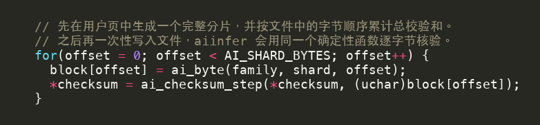
write_shard() 在栈上准备一个 1024 字节的 block。循环中的三个参数共同决定每个字节：
family区分模型和 embedding；shard区分同一 family 中的分片编号；offset区分文件内部位置。
每生成一个字节，就立即按相同顺序更新总 checksum。这样 modelprep 最后得到的 checksum 同时依赖文件类别、分片顺序和文件内容。
为什么这里允许调用 ai_byte()？
这是资产制作程序，职责就是生成文件。模型加载附加题的被测函数必须从文件读取，不能把这段生成逻辑搬过去绕开 I/O。
再把分片写入 xv6 文件系统¶
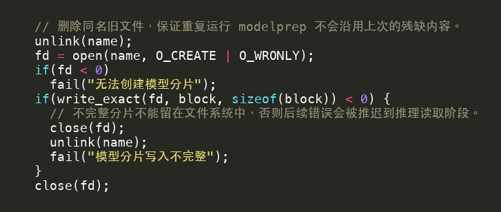
这一小段依次执行：
unlink(name)删除同名旧文件，使重复运行modelprep得到干净资产；open(..., O_CREATE | O_WRONLY)创建只写文件；write_exact()保证全部 1024 字节写完；- 失败时关闭并删除不完整文件；
- 成功时关闭 fd，把完整文件留给后续推理。
注意失败清理顺序：只 close() 而不 unlink() 会留下长度不足的分片，下一次 aiinfer 可能在读取中途才报错。
分别遍历两类分片¶
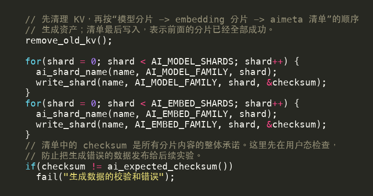
两个循环的结构相同，但 family 不同，因此生成的文件名前缀和字节内容不同。第一个循环得到 m00～m36，第二个得到 e00～e36。完成 74 个文件后再比较 ai_expected_checksum()，可以在写清单前发现生成过程错误。
最后写入模型清单¶
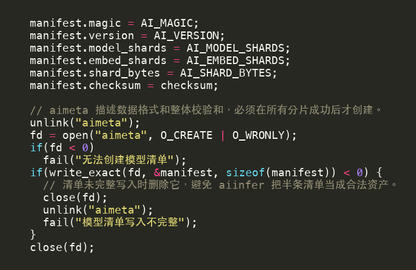
这个清单文件名为 aimeta。它记录 magic、版本、两类分片数量、分片大小和总 checksum。aiinfer 启动时先读取 aimeta，只有这些字段全部符合预期才运行 workload。
aimeta 可以看成“大数据文件之外的一张小目录”：
| 字段 | 作用 | aiinfer 的检查 |
|---|---|---|
magic |
标识文件格式 | 防止误读其他文件 |
version |
标识数据格式版本 | 防止程序与旧资产不匹配 |
model_shards / embed_shards |
两类分片数量 | 都必须为 37 |
shard_bytes |
每个分片大小 | 必须为 1024 |
checksum |
全部分片内容的汇总校验 | 检查文件集合和顺序 |
这是一种常见的文件格式设计：大数据放在若干数据文件中，小清单保存格式与整体校验信息。清单正确不代表每次推理可以跳过分片读取；它只能证明资产集合的描述符合协议。
你现在应当理解
modelprep 的输出不是一个 C 数组，而是 xv6 文件系统中的 75 个文件。推理通路第一次使用某个分片时，必须通过文件接口取得真实字节。
检查理解：若第 20 个分片只写入一半，为什么不能仍然写出 aimeta？
清单会宣称资产完整，但实际文件长度不符合协议。后续错误会延迟到推理读取阶段，且清单 checksum 也不再代表磁盘上的完整文件集合。
检查理解：为什么不在构建 fs.img 时直接放入这些文件？
预置文件也能产生读取压力，但用户态 modelprep 能让你看到资产如何通过普通文件接口创建，并可在 xv6 中随时重新生成一致数据。无论怎样准备，推理时的首次读取都必须来自文件系统。
read_exact() 和 write_exact() 为什么要循环¶
普通 read(fd, p, length) 或 write(fd, p, length) 的返回值是“本次完成的字节数”，不是“调用者要求的总长度”。因此 baseline 先提供两个精确 I/O 辅助函数。read_exact() 和 write_exact() 是用户态的普通函数，不是新增的 xv6 系统调用；它们在内部循环调用 read() 或 write()。
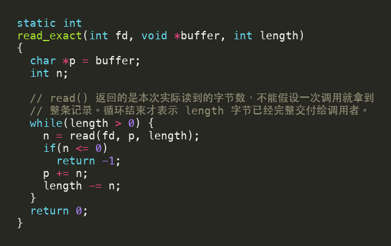
每次成功读取 n 字节后，指针前移 n，剩余长度减少 n。若返回 0 或负数，说明无法继续取得完整记录，函数立即失败。循环结束时才能保证调用者缓冲区的目标区间全部由文件填充。
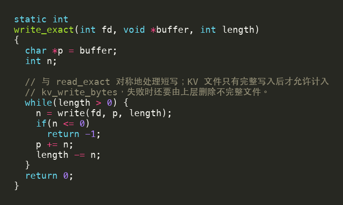
精确写入使用同样的状态变化。不要在每次循环里都从原指针和原长度重试，否则会重复写入前半段数据。
常见误区：本次实验里通常一次就写完，所以不需要循环
正确接口不能依赖某次运行的偶然返回值。文件系统实现、设备状态或未来 workload 改变后都可能出现短读短写；而 KV 附加题明确要求一条记录完整提交。
baseline 如何加载一个分片¶
本节先只看 baseline 在用户态如何组织一次分片读取；这些 open/read/close 进入 xv6 内核后会经过哪些层，见 一次文件访问怎样经过 xv6。
baseline 先检查 family 和 shard 是否在合法范围，再生成文件名并读取：
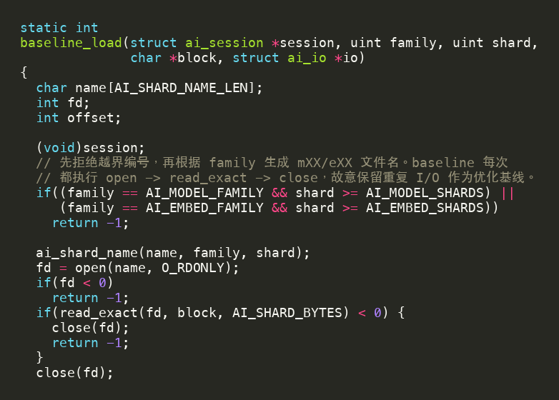
逐步看这段代码：
family决定分片属于模型还是 embedding，也决定允许的最大编号；ai_shard_name()把二元组(family, shard)转成m07或e07；open()失败时没有 fd 需要清理，直接返回；read_exact()失败时 fd 已打开，所以必须先close()；- 完整读取后立即
close()，baseline 不跨调用保留文件状态。
文件读完还不能立刻宣告成功：
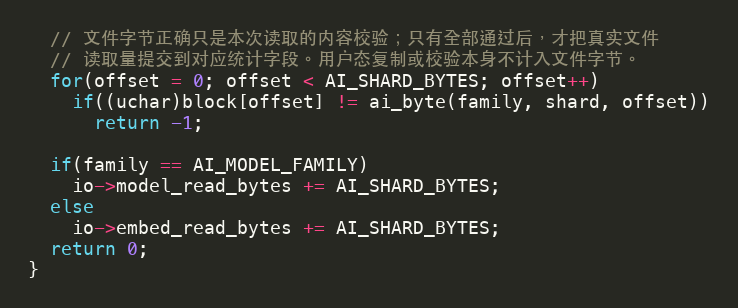
循环逐字节比较已经读入 block 的文件内容，任何一个位置不符都返回失败；校验只检查读取结果，不会代替文件读取来生成数据。只有完整读取并通过校验后，才根据 family 增加相应 I/O 字节数。这种“最后提交统计”的顺序很重要：失败调用不能伪装成一次成功 I/O。
baseline 的优点是状态简单：每次调用从打开文件开始，以关闭文件结束，失败路径容易审查。它的低效也很明确：即使同一 worker 第二次请求 m07，仍会再次执行 open -> read_exact -> close -> 校验。
模型加载附加题真正要优化什么
你可以改变分片在请求之间怎样组织和复用，但不能删除范围检查、第一次真实读取、内容正确性或真实 I/O 计数。优化对象是重复工作，不是正确性协议。
检查理解：缓存命中时还应该增加 model_read_bytes 吗？
不应该。该字段统计真实文件读取字节；从用户态缓存复制到 block 不是文件读取。第一次把分片从文件装入缓存时才增加。
baseline 怎样写入和恢复 KV¶
每个请求使用独立文件¶
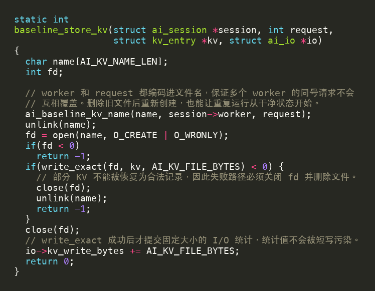
ai_baseline_kv_name() 把 worker 和 request 都编码进文件名。例如 kvb007 表示 worker 0 的请求 7。这样不同请求天然隔离，不需要在一个文件中维护偏移。
写入顺序为：
- 删除可能残留的同名旧文件；
- 创建只写文件；
- 精确写入
AI_KV_FILE_BYTES，也就是 2048 字节； - 失败时关闭并删除不完整文件；
- 成功时关闭文件并增加
kv_write_bytes。
从内核视角看，这次“写盘”还会经过目录、inode、数据块和日志路径：
查找或创建目录项
-> 分配并更新 inode
-> 把文件偏移映射到数据块
-> bread/bget 取得相关缓存块
-> 把用户态 KV 字节复制进 buf
-> bwrite / 日志路径记录修改
-> close 释放文件引用
因此创建一个 KV 文件不只是在写 2048 字节数据，还会修改目录和 inode 元数据；每请求一个文件虽然隔离清楚，却会增加目录查找、日志事务和 buffer cache 管理开销。
baseline 选择简单隔离，代价是每个请求都要创建文件、更新目录和 inode、打开再关闭。3 个 worker 各处理 24 个请求时，仅 KV 就会产生 72 个临时文件。
本实验中“写盘”的准确含义
write() 返回成功，表示字节已经交给 xv6 文件系统和缓存路径；这里不把它解释为断电后数据必然已经落到物理介质的严格持久化承诺。实验关注的是文件系统路径、完整记录和可恢复性。
恢复时重新打开同一文件¶
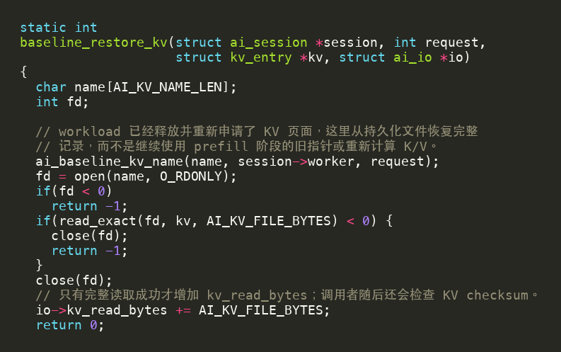
恢复函数再次根据 (worker, request) 生成相同文件名，以只读方式打开，并把 2048 字节完整读入调用者提供的新 kv 页面。这里没有使用 prefill 时的旧指针，也没有重新计算 K/V。
成功后才增加 kv_read_bytes。所有请求完成时，baseline_end() 遍历该 worker 的请求编号，删除临时文件并清空 session。
KV 附加题可以使用不同文件组织，但必须回答：某个 request 的 2048 字节写在什么位置？恢复时怎样找到完全相同的记录？发生短写或短读时，状态是否仍然可清理？
workload 怎样证明数据真的离开过内存¶
写盘成功后立即释放原页面¶
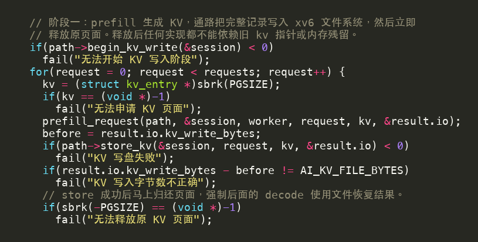
prefill_request() 先把 KV 写入新申请页。store_kv() 返回后，workload 比较 kv_write_bytes 的增量；不是恰好 2048 字节就失败。随后 sbrk(-PGSIZE)（它进入页分配器的调用链见 页面分配路径）缩小地址空间，原 kv 指针立即失效。
因此，把旧指针存入 session 不是缓存方案。它指向的虚拟地址已不再属于进程，后续读取既不合法，也不能证明恢复发生。
恢复前覆盖新页面¶
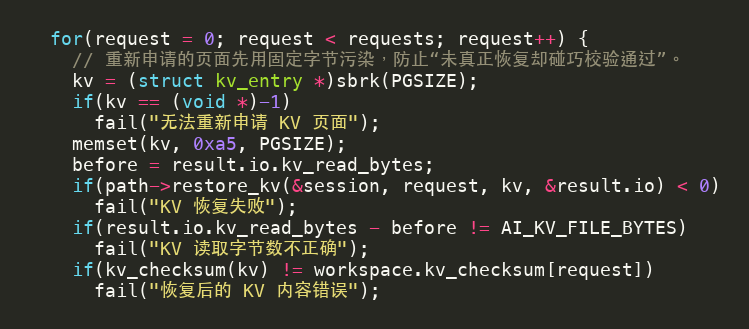
恢复时先申请一页，并把整页写成 0xa5。这样即使 kalloc() 恰好返回刚释放的同一物理页，旧 KV 残留也已经被破坏。随后才调用 restore_kv()。
恢复后依次检查：
- 本次真实读取字节增量是否为 2048；
- 新页面中的 KV checksum 是否与 prefill 时保存的 checksum 相同；
- decode 输出是否与其他通路逐请求相同。
三层检查分别约束 I/O 数量、原始内容和推理语义。错误实现很难只靠偶然残留数据蒙混过关。
这里的 KV checksum 与最终输出 checksum 不是同一个检查：前者在 decode 前验证恢复到用户页的原始 2048 字节，后者汇总 decode 结果，用来比较 baseline、student 和 prefetch 的推理语义。KV 正确但输出不同，仍应检查 query、请求顺序或 decode 输入是否被混淆。
你现在应当理解
baseline 不是“故意写错的慢代码”，而是一条正确且易审查的参考语义。student 可以重新组织 I/O，但必须保持它的所有可观察结果和正确性不变量。
sbrk() 如何触发页分配器¶
workload 通过用户态 sbrk() 管理 KV 页面，因此 AI 请求也会进入 Lab3 的页分配器：
sbrk(PGSIZE) -> growproc -> uvmalloc -> kalloc
sbrk(-PGSIZE) -> growproc -> uvmdealloc/uvmunmap -> kfree
申请时，内核分配一个物理页并把它映射到 worker 的页表；释放时解除映射，再把物理页归还空闲页链表。多个 worker 同时申请或释放页面，会竞争原版 xv6 的 kmem.lock。因此，Lab3 原题任务一（kalloc） 的每 CPU freelist 优化也会影响 AI workload；出现 kmem_spins 变化时，应沿这条调用链解释，而不是认为 AI 程序直接调用了 kalloc()。
按阶段追踪数据位置¶
| 阶段 | 主要数据 | 所在位置 | 下一步 |
|---|---|---|---|
| 资产准备后 | 模型、embedding | xv6 文件系统 | worker 读取分片 |
| prefill 中 | 分片副本、query、KV | worker 用户地址空间 | KV 完整写盘 |
| offload 后 | KV 文件记录 | 文件系统及其 buffer cache | 释放原用户页 |
| restore 前 | 新 KV 页 | 用户空间，内容为 0xa5 |
从文件读取 |
| restore 后 | 恢复后的 KV | 新用户页 | checksum 与 decode |
| 请求结束 | 输出与指标 | worker 结果结构 | 管道返回父进程 |
追踪时始终问三个问题：数据属于哪个请求、当前在哪一层、下一步由谁接收。这样可以区分用户态模型缓存、请求私有的 KV cache，以及内核的 buffer cache。
一次文件访问怎样经过 xv6¶
用户态的一次 read() 看起来很短，实际会穿过文件描述符、inode、buffer cache 和磁盘驱动。baseline 看到的代码大致是：
fd = open(name, O_RDONLY);
read(fd, block, AI_SHARD_BYTES);
close(fd);
以中间的 read() 为例：
用户态 ai_baseline.c
-> read 系统调用入口
-> 根据 fd 找到 struct file
-> inode 根据文件偏移定位数据块（bmap）
-> bread/bget 在 buffer cache 查找磁盘块
-> 命中：直接使用缓存中的 buf
-> 未命中：申请 buf，并让 virtio 从磁盘读取
-> 把 buf 中的数据复制到用户缓冲区
-> brelse 释放本次引用
逐层看数据在哪里：
| 层次 | 主要对象 | 作用 |
|---|---|---|
| 用户态 | block[1024] |
read() 完成后得到分片副本 |
| 文件描述符层 | struct file |
保存文件类型、当前偏移和 inode 引用 |
| 文件系统层 | struct inode、bmap |
把文件偏移翻译成磁盘块号 |
| buffer cache | struct buf |
保存磁盘块的内存副本 |
| virtio 磁盘 | 块设备请求 | 缓存未命中时真正取得磁盘块 |
open() 和 close() 也有成本：它们要查找目录、维护 inode 和文件引用。因此，同一 worker 即使命中 buffer cache，每次重新打开和关闭分片仍然会经过系统调用和缓存管理。
这里要区分两种缓存：模型缓存位于用户态，知道“这是 m07 的 1024 字节”，命中后可以跳过整次 open/read/close；buffer cache 位于内核，只知道“这是设备上的某个磁盘块”，命中后只能避免真正读磁盘，系统调用和缓存管理仍然存在。KV 写入还会额外修改目录、inode 和日志，完整路径见 baseline KV 生命周期。
常见误区：缓存命中不等于没有锁
即使磁盘块已经在 buffer cache 中，进程仍要查找对应 buf、增加引用计数并获取该块的睡眠锁。设计不当时，纯缓存命中也会产生明显竞争。
AI 附加题中的锁观察入口¶
AI 推理服务会通过 sbrk()、文件读写和管道路径间接触发 kmem、bcache 及其他内核锁。本节帮助解释 AI 指标，不引入额外的基础锁任务；完成标准见附加题要求。
原来的 kalloctest 与 bcachetest 分别强调页分配器和磁盘缓存。aiinfer 则把两条路径放进同一个端到端请求中：
多 worker 同时启动
|-- sbrk(PGSIZE) / sbrk(-PGSIZE)
| `-> kalloc / kfree -> kmem* 自旋锁
|
|-- open/read 模型与 embedding
| `-> inode / bread / bget -> bcache* 自旋锁
|
`-- create/write/read KV 文件
`-> 日志 / inode / bread / bwrite -> bcache* 自旋锁
如果你刚从 AI 原理页跳到这里，可以用下表定位“业务动作”和“内核共享状态”的关系：
| AI workload 动作 | 主要系统调用 | 内核路径 | 本节应关注的竞争 |
|---|---|---|---|
| 申请或释放 KV 页面 | sbrk() |
growproc -> uvmalloc/uvmdealloc -> kalloc/kfree |
kmem* 锁 |
| 读取模型/embedding 分片 | open/read/close |
inode、bmap、bread/bget |
bcache* 与单块睡眠锁 |
| 创建并写入 KV 文件 | open(O_CREATE)/write |
目录、inode、日志、bread/bwrite |
bcache* 及文件系统共享结构 |
| 恢复 KV | open/read |
文件块映射、buffer cache、磁盘 | bcache* 与 I/O 等待 |
这张表的重点不是说 AI 代码直接获取 kmem 或 bcache 锁，而是说明普通系统调用会把用户请求带到这些共享内核路径。分析指标时要沿调用链解释。
这里的 kmem* 和 bcache* 表示锁名以前缀匹配。aiinfer 在 worker 开始前和结束后分别读取锁统计，使用差值作为本次 workload 的自旋次数。如果新增锁没有按要求命名，就可能不会被归入对应类别。
为什么要同时看前缀统计与 total_spins¶
kmem_spins帮助判断页分配器是否仍是热点；bcache_spins帮助判断模型/KV 文件路径是否仍集中在少数锁上；total_spins覆盖本次运行中统计到的全部相关锁竞争，是评分中争用倍率的基础。
优化某一层可能把成本移动到另一层。例如模型分片缓存减少了 bcache 读取，却需要在 worker 开始时集中申请较多页面；每 worker 顺序 KV 文件减少了目录和打开/关闭，却仍会写相同总字节数。因此应比较多个指标，而不是只寻找一把“最忙的锁”。
#acquire 多不一定意味着性能差¶
把一把全局锁拆成多把桶锁后，总获取次数可能没有明显减少，甚至因更细的操作而增加；但只要不同 CPU 大多获取不同锁，#fetch-and-add 可以大幅降低。实验关注的是等待和串行化，而不是机械地让函数调用次数最少。
怎样读一条 AI 指标行¶
假设输出包含：
throughput_milli=12000 p95_ticks=52 kmem_spins=3
bcache_spins=420 total_spins=430
可以解释为：按 aiinfer 的固定整数尺度计算，吞吐指标为 12000，比较时数值越大越好；95% 的请求从 prefill 开始到 decode 完成不超过 52 tick；页分配器仅出现少量自旋，而文件缓存路径贡献了大部分争用。不要自行把 throughput_milli 改写成其他单位后再比较，评分脚本直接使用输出中的统一尺度。
这并不自动证明实现正确。仍需同时检查 verify OK、四类 I/O 字节、checksum 和 compare 的逐请求等价结果。
p95 为什么不是“最慢请求”¶
把全部请求延迟从小到大排序，p95 取第 ceil(0.95 * N) 个样本。它丢弃最极端的少量尾部值，但比平均值更敏感于排队和热点锁造成的长等待。对于 3 worker × 24 请求，共有 72 个样本，p95 接近排序后的第 69 个样本。
在 tick 粒度较粗的小型 xv6 workload 中，多个相邻样本可能相同，因此 p95 倍率会有波动。教师脚本运行多次并取中位数，正是为了降低偶然调度的影响。
prefetch 的同步也会产生竞争¶
预取没有绕开操作系统。它把原来“父 worker 自己同步读取”的一条路径，改成了“父进程发送请求—辅助进程读取—辅助进程回传—父进程接收”的流水线。磁盘等待可能被当前计算覆盖，但系统工作并没有消失。
prefetch 新增了哪些内核路径¶
一条预取请求至少可能经过：
父 worker write(request pipe)
-> pipe 缓冲与唤醒
-> 调度辅助进程
-> 辅助进程 read(KV file)
-> inode / log / buffer cache / virtio 路径
-> 辅助进程 write(data pipe)
-> 2048 字节经过内核 pipe 缓冲复制
-> 唤醒并调度父 worker
-> 父 worker read(data pipe)
-> 复制到最终 KV 页面
因此新增成本包括：
| 成本 | 来自哪里 | 可能怎样影响指标 |
|---|---|---|
| 管道同步 | pipe 缓冲、sleep/wakeup、端点状态 | 增加内核锁获取和等待 |
| 上下文切换 | 父 worker 与辅助进程交替运行 | 增加 elapsed ticks，调度不佳时抬高 p95 |
| 数据复制 | KV 从文件到子进程，再经 pipe 到父进程 | 增加 CPU 和内存访问成本 |
| 文件读取 | 辅助进程仍调用真实 read() |
仍会进入 inode 与 buffer cache 锁路径 |
| 辅助资源 | 进程、fd、scratch 页和 pipe buffer | 可能增加页分配及全局内核结构压力 |
多 worker 时，每个 worker 都有自己的辅助进程。若 3 个父 worker 同时运行，系统中可能出现 3 个读文件的辅助进程和 3 组管道；并发机会增加的同时，调度与共享内核路径的竞争也会增加。
buffer cache 命中为什么仍不是零成本¶
辅助进程提前读取可能使 KV 所在块进入 buffer cache。后续操作不一定再等待磁盘，但仍可能执行系统调用、查找 inode、获取 buffer 锁、在用户态与内核态之间复制，并通过管道再次复制到父进程。
这解释了两种看似矛盾但都可能正确的结果：
- 冷数据或 I/O 较慢时，预取隐藏的等待大于通信成本，吞吐上升；
- 数据已经很热时，同步 student 路径本来就很快，管道和调度成为额外负担，prefetch 反而变慢。
怎样判断“异步”是否真的发生¶
不要只根据函数名或最终耗时判断。沿时间线检查四个位置：
restore(i) -> next(i+1) -> decode(i) -> wait(i+1)
- 若
next()内同步读完 KV 才返回，读取发生在 decode 之前，没有重叠； - 若
next()后立即wait()，父 worker 在 decode 前就阻塞，没有重叠； - 若
wait()只等待一个标志，而数据仍由restore()同步读取，也没有完成数据读取重叠； - 只有辅助读取发生在
next()返回后、wait()完成前，且这一区间包含当前 decode，才形成有效流水线。
窗口状态也应与时间线一致：
next: EMPTY -> PENDING
wait: PENDING -> READY
restore: READY -> EMPTY
如果 next() 返回时已经是 READY，应继续检查它是否在内部同步做完全部读取；如果长期停在 PENDING，则 decode 结束后仍会等待，说明 R 大于可覆盖的 C，或辅助进程未及时获得 CPU。
指标要成组解释¶
正确分析应同时回答：
student与prefetch是否逐 worker、逐请求输出等价；- 模型、embedding、KV 写入和 KV 读取字节数是否仍满足协议；
- 吞吐和 p95 怎样变化，是否一项改善而另一项退化；
kmem_spins、bcache_spins与total_spins是否显示热点迁移；- 新增辅助进程、管道复制和上下文切换能否解释结果；
- 结构检查能否证明读取确实与 attention 计算重叠。
例如，吞吐略升但 p95 变差，可能表示大多数读取被隐藏，而少数 worker 在管道或调度处长时间等待；争用上升但吞吐也上升，则可能表示系统做了更多并发工作，锁获取增加却换来了更好的重叠。不能只选一个最有利的数字下结论。
因此，prefetch 任务用于理解 I/O—计算重叠与 OS 成本权衡，并不承诺必然加速。
为什么 prefetch 的 bcache_spins 可能下降，而 total_spins 仍上升？
文件读取可能因时序或缓存命中减少了 buffer cache 等待，但管道、进程调度或其他内核共享结构带来了新的竞争。total_spins 覆盖更广，热点可能只是从 bcache 移到了别处。
读完本节后回到哪里
若你已经理解锁统计怎样对应 AI 请求，可以回到 AI 附加题中的模型任务 和 KV 任务 开始编码；若仍分不清模型缓存、KV cache 和 buffer cache，请先阅读 part5 中的三种 cache 对比。